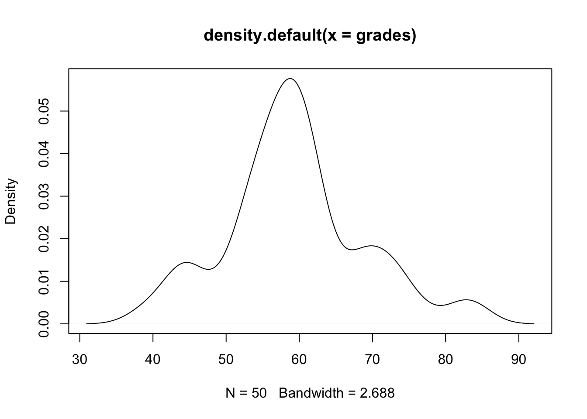

Chapter 15 Tests and modelling in R
In this section, we will look very closely at the assessment of the relationships that are based on variation in your data. We will also discuss the importance of variability as an important ingredient for conducting statistical tests that do not just scream of significance but also make an appropriate use of the tools.
In the previous session we introduced you to plenty of ways to visualise your data in R, organise it, and tidy it. Visualisations are not just there for fun graphics, they are an essential part of data examination that can highlight problems related to lack of variability in your data sooner than later.
We expect that you may have seen the tools we will be discussing below but may know how to use them in SPSS or Excel, we thus will focus more on application of these in R, very quick results interpretation, diagnostics set up and the assumptions checking.
We will use the mix of tools that you have already seen, including using the simple plot() function and more of the psych descriptive tools.
You can get the data for today here.
15.1 Hypothesis testing
In R, we can generate distributions, visualise them, study them, and also find critical values if we are interested with testing the probability of the data occurring under null distribution. For continuous variables, we will be dealing with t and Z distributions.
 Image courtesy: Andy Connelly
Image courtesy: Andy Connelly
We will present one here with a continuous variable. Let us generate a normal distribution of grades.
grades_generated <- rnorm(n=20, mean=60, sd=4)
summary(grades_generated)## Min. 1st Qu. Median Mean 3rd Qu. Max.
## 52.07 57.71 60.59 60.71 63.79 68.12We can also create it by imputing some data:
grades <- c(63, 68, 72, 53, 43, 59, 56, 58, 76, 54, 46, 62, 58, 54, 45,
53, 82, 69, 51, 58, 45, 50, 60, 73, 62, 56, 60, 53, 61, 56,
43, 39, 61, 68, 60, 60, 58, 61, 63, 59, 58, 73, 54, 55, 57, 62, 71, 58, 84, 68)
summary(grades)## Min. 1st Qu. Median Mean 3rd Qu. Max.
## 39.00 54.00 58.50 59.36 62.75 84.00Lets visualise the grades so we can imagine what our distribution looks like:
hist(grades, ylim = c(0,20), xlim = c(30,90))
#We can also present it as density function
plot(density(grades))
We can perform a one sample t-test sample using R. I want to test how likely it is to observe mean of 85 under the null distribution.
t.test(x = grades, #x: a numeric vector containing your data values
mu = 85, #mu: the theoretical mean (default = 0)
alternative = "two.sided") #the alternative hypothesis. Can also use “greater” or “less”.##
## One Sample t-test
##
## data: grades
## t = -19.103, df = 49, p-value < 2.2e-16
## alternative hypothesis: true mean is not equal to 85
## 95 percent confidence interval:
## 56.6628 62.0572
## sample estimates:
## mean of x
## 59.36Interpret the output: * t is the t-test statistic value * df is the degrees of freedom * p-value is the significance level of the t-test * conf.int is the confidence interval of the mean at 95% * the mean of x is the mean of your sample
You can also save your test as an object within R so that you can easily access this at a later time:
tresults <- t.test(x = grades,
mu = 85,
alternative = "two.sided")The result of t.test() function is now saved as a list containing 9 components. We can view these individually:
tresults$statistic # test statistic - t value## t
## -19.10331tresults$parameter # the degrees of freedom for the t test statistics## df
## 49tresults$p.value # p-value for the test## [1] 2.375648e-24tresults$conf.int #95% confidence intervals for the mean appropriate to the specified alternative hypothesis## [1] 56.6628 62.0572
## attr(,"conf.level")
## [1] 0.95We can also test whether true mean is greater than the sample mean of 65 under the null distribution:
t.test(grades, mu = 65, alternative = "greater")##
## One Sample t-test
##
## data: grades
## t = -4.2021, df = 49, p-value = 0.9999
## alternative hypothesis: true mean is greater than 65
## 95 percent confidence interval:
## 57.10977 Inf
## sample estimates:
## mean of x
## 59.36We can also test whether true mean is smaller than the sample mean of 65 under the null distribution:
t.test(grades, mu = 65, alternative = "less")##
## One Sample t-test
##
## data: grades
## t = -4.2021, df = 49, p-value = 5.576e-05
## alternative hypothesis: true mean is less than 65
## 95 percent confidence interval:
## -Inf 61.61023
## sample estimates:
## mean of x
## 59.36We can reject the null, meaning that true mean is less than 65, but certainly not greater than 65. Looks good! Make a note of key outputs, most of them will reappear in other setting (i.e. p-value, test statistics, df).